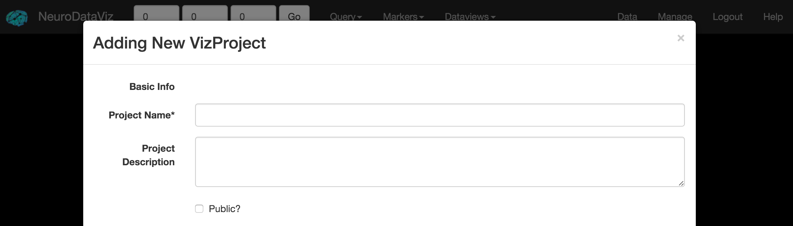
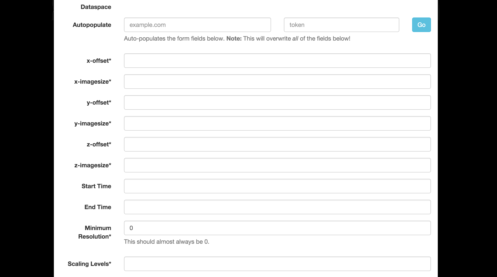
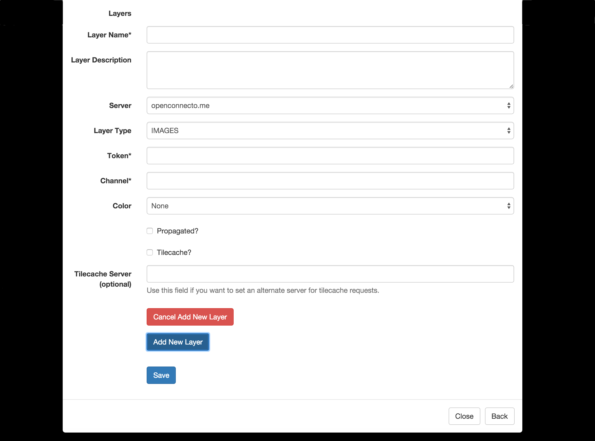

Creating a VizProject
From the Management Interface, click the Create Project link in the menu bar. A description of each field is listed in the table below.

Basic Information
- Project Name: A unique name for the VizProject, which also doubles as its URL token (e.g. http://viz.neurodata.io/project/myvizproject/ would be the URL for the VizProject called myvizproject). As such, the Project Name can not contain spaces or special characters (other than an underscore).
- Project Description: A brief Project Description.
- Public: Currently has no effect. It is possible that private projects would be hidden from unauthenticated users in a future release.

Dataspace
Autopopulate
Since NeuroDataViz is separate from ndstore, the dataset / dataspace parameters must be input into NeuroDataViz. Since this is a tedious and error prone process, the Management Interface provides an autopopulate function that fetches dataset parameters from ndstore. Simply provide a server URL and a token for one of the ndstore projects in the dataset you want to input, click Go, and the Dataspace fields will be populated automatically.
- x-offset: The x-offset for the ndstore dataset corresponding to your token.
- x-imagesize: The x-imagesize for the ndstore dataset corresponding to your token.
- y-offset: The y-offset for the ndstore dataset corresponding to your token.
- y-imagesize: The y-imagesize for the ndstore dataset corresponding to your token.
- z-offset: The z-offset for the ndstore dataset corresponding to your token.
- z-imagesize: The z-imagesize for the ndstore dataset corresponding to your token.
- Start Time: For timeseries projects only. If time does not start at t=0, select a time offset.
- End Time: For timeseries projects only. The highest timestep in the dataset.
- Minimum Resolution: This should almost always be 0. Refer to ndstore for the correct value.
- Scaling Levels: The number of downsampled images in the resolution hierarchy. Note that this does not include the two upsampled zoom levels that NeuroDataViz provides. Matches the ScalingLevels parameter in ndstore.

Layers
Each layer corresponds to a token / channel combination from ndstore.
Layers can be added using the Add New Layer button at the bottom of the screen. New layers are only added once Save is clicked, and a VizProject can be created without adding new layers (should you want to save your progress as you go).
- Layer Name: A friendly name for the layer. This name can include spaces and some special characters.
- Layer Description: A short description for the layer.
- Layer Type: The NDV layer type corresponds to the type from ndstore.
- Token: The ndstore token (accessor) for the layer.
- Channel: The ndstore channel for the token. Even if the token only has one channel, this field is required.
- Color: Optional, and only for image layers, this field false colors the layer. Useful for IF data.
- Propagated?: If the layer has been downsampled (propagated) and the resolution hierarchy stored in ndstore, this should be checked.
- Tilecached?: If this option is checked, the tilecache will be used instead of the standard ndstore tiles interface. Not all ndstore installations are tilecache compatibile. If you are unsure, leave this unchecked.
- Tilecache Server: For advanced users. This field allows the user to set a separate tilecache server for loading images. One example use case is a multi-region ndstore deployment, where the main database system lives in one region, but tilecache servers are deployed on a local (or closer) network.
{kind=link}
{kind=link}